Autoloot setups
| New setups added! | |
|---|---|
| Added setup for #Illusion Dungeons (160+) |
Hey!
Because i didn't find any general topic about autoloot setups i decided to create a quick overview.
Below you can find some of my sets of autoloot useful to farm zeny, food or other useful stuff.
Quick facts
- Following autoloots were set up in compare of weight of items, price and usefulness.
- You can find here how to quick setup, save and load your desired autoloot using basic commands.
- Setups are NOT for items which drop below 1%, so be sure to type command
@autoloot 1right after you load your autoloot. - In the autoloot setups #Genetic cooking material 1.0 and #General farm, expensive items there are no armor or weapon items included, so you will be able to carry more items. ^^
Commands step by step
If you want to setup, save and then load specific autoloot setup, proceed as follows:
- Turn your autoloot OFF -
@autoloot off - Type the autoloot setup of your choice (e.g. for Geffenia:
@alootid +13313|+526|+2613|+2610|+522|+1039|+984|+12370|+1939|+2865|-15014|-1974) - Save the autoloot setup -
@savealoot - Load your desired autoloot setup -
@loadaloot - Set autolooting items 1% and below too -
@autoloot 1(recommended but optional)
 Useful Notes
Useful Notes
- If you have autoloot already saved, you need to run only commands in steps 4. 5. above (e.g. next time you login into game).
- Maximum of items in the autoloot list is 20.
- You can add (whitelist) item to the list by the command
@alootid +itemID(or@alootid +itemNAME). - You can remove (blacklist) item from the list by the command
@alootid -itemID(or@alootid -itemNAME). - If you want to clear (reset) your autoloot list, type
@alootid reset(this will NOT reset your percentual setup of autoloot). - Loading another autoloot setup (list) will rewrite the current autoloot setup (list) but will NOT reset your percentual setup of autoloot.
TIP:
You can preset your percentual autoloot after login. Just click on this guy in the Main Office (@go main) - bottom right corner.

Login Settings
So, if you will preset percentual autoloot after login on 1%, you can skip step 5. above too. You just login, @loadaloot and you're ready to go!
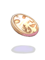 Autoloot farming setups
Illusion Dungeons (160+)
Command:
@alootid +35055|+985|+984|+25634|+25639|+1000516|+1000515|+1000512|+1000510|+1000511|+1000517|+25783|+25784|+5126|+2518|+25781|+25775|+25782|+25633|+25638|-1470|-1186|-2326|-2005|-1481|-1913|-1972|-1231|-1181|-1414|-13062|-1137
List of items:
 Twilight Illusion Stone
Twilight Illusion Stone
 Elunium
Elunium
 Oridecon
Oridecon
 Wootan Defender's Shield Piece
Wootan Defender's Shield Piece
 Fragment of Lightning Stone
Fragment of Lightning Stone
 Bat Jawbone
Bat Jawbone
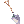 Small Shovel
 Ant Jaw
Ant Jaw
 Ant Antennae
Ant Antennae
 Ant Leg
Ant Leg
 Bat Fur
Bat Fur
 Cold Holy Water
Cold Holy Water
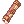 Small Flashlight
 Morpheus's Hood
Morpheus's Hood
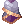 Morpheus's Shawl
 Pretty Little Candle
Pretty Little Candle
 Fluffy Cloth Piece
Fluffy Cloth Piece
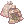 Medicinal Bag
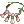 Token of Wootan
 Token of Megalith
Token of Megalith
Blacklisted items:
 Bazerald
Bazerald
 Tae Goo Lyeon[2]
Tae Goo Lyeon[2]
Brionac
Electric Guitar
Electric Eel[2]
Zephyrus[3]
 Death Guidance[2]
Death Guidance[2]
Saint's Robe[1]
 Dea Staff[1]
Dea Staff[1]
 Gelerdria
Gelerdria
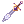 Ancient Dagger
 Excalibur
Excalibur
Consider blacklisting:
 Morpheus' Bracelet Item ID# 2649
Morpheus' Bracelet Item ID# 2649
 Morpheus' Ring Item ID# 2648
Morpheus' Ring Item ID# 2648
Note:
Please note, that this setup is mainly for the following level 160+ Illusion Dungeons: Illusion of Luanda, Illusion of Labyrinth, Illusion of Underwater and Illusion of Twins.
It was created for fast farming refine boxes,  Illusion Stones, Twilight Illusion Stones and the most expensive gear from these dungeons (primarily Morpheus's gear set).
Illusion Stones, Twilight Illusion Stones and the most expensive gear from these dungeons (primarily Morpheus's gear set).
But of course, you can use it in other Illusion Dungeons too - you will just not have blacklisted items there.
TIP:
Check more informations about Illusion Dungeons here.
Geffenia
Command:
@alootid +13313|+526|+2613|+2610|+522|+1039|+984|+12370|+1939|+2865|-15014|-1974
List of items:
 Flower Huuma Shuriken[2]
Flower Huuma Shuriken[2]
 Royal Jelly
Royal Jelly
 Diamond Ring
Diamond Ring
 Gold Ring
Gold Ring
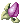 Mastela Fruit
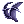 Little Evil Wing
Oridecon
 Girl's Naivety
Girl's Naivety
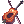 Crimson Violin[2]
 Seal Of Cathedral (can be recycled for
Seal Of Cathedral (can be recycled for  Mora Coin, see Mora Equipment)
Mora Coin, see Mora Equipment)
Blacklisted items:
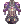 Ebon Armor[1] (sooo heavy)
 Carrot Whip (drops a lot and have no price)
Carrot Whip (drops a lot and have no price)
Consider blacklisting Oridecon (Item ID# 984), which is heavy and drops a lot.
Consider whitelisting following items:
Elunium Item ID# 985
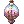 Cursed Water Item ID# 12020
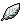 White Herb Item ID# 509
 Hand of God Item ID# 1009
Hand of God Item ID# 1009
Thanatos Tower F8 (after Thanatos Tower rework)
Command:
@alootid +731|+728|+7435|+12040|+723|+7015|+732|+616|+7442
List of items:
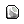 2carat Diamond
 Topaz
Topaz
Stone of Sage
 Ruby
Ruby
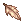 Bookclip in Memory
 3carat Diamond
3carat Diamond
 Old Card Album
Old Card Album
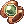 Golden Ornament
 Cursed Seal
Cursed Seal
Consider whitelisting following items:
 Crimson Two-Handed Sword[2] Item ID# 21015
Crimson Two-Handed Sword[2] Item ID# 21015
TIP:
After Thanatos Tower rework there are really lots of Thanatos mobs in F8. It is possible to farm there with autoloot on 100% and selling all Goibnes and Crimson armor as soon as you are overweighted. However, you will be overweighted really fast. It's about 700K zeny per turn (only for gear, other loot not included).
Thanatos Tower mainly F9-F12 (before Thanatos Tower rework)
Command:
@alootid +731|+728|+12040|+722|+723|+1158|+1909|+1910|+718|+732|+616|+2506|+644
List of items:
2carat Diamond
Topaz
Stone of Sage
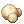 Pearl
Ruby
Two-Handed Sword[2]
Harp
 Harp[1]
Harp[1]
 Garnet
Garnet
3carat Diamond
Old Card Album
Manteau[1]
 Gift Box
Gift Box
Consider whitelisting following items:
Golden Ornament Item ID# 7435
Crimson Two-Handed Sword[2] Item ID# 21015
Crimson Violin[2] Item ID# 1939
Note:
This setup can be also used in F7 after Thanatos Tower rework but i recommend also whitelist Bookclip in Memory Item ID# 7015.
Genetic cooking material 1.0
Command
@alootid +507|+509|+508|+510|+511|+6259|+6254|+6252|+6257|+6256|+6253|+6260|+6249|+950|+1061|+952|+972|+970|+514|+518
List of items:
 Red Herb
Red Herb
White Herb
 Yellow Herb
Yellow Herb
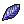 Blue Herb
 Green Herb
Green Herb
 Drosera Tentacle
Drosera Tentacle
 Beef Head
Beef Head
 Blood Of Wolf
Blood Of Wolf
 Ice Crystal
Ice Crystal
 Ice Piece
Ice Piece
 Cold Ice
Cold Ice
 Petite's Tail
Petite's Tail
 Savage Meat
Savage Meat
 Heart of Mermaid
Heart of Mermaid
 Witched Starsand
Witched Starsand
 Cactus Needle
Cactus Needle
 Karvodailnirol
Karvodailnirol
 Alcohol
Alcohol
 Grape
Grape
 Honey
Honey
Non-included items for which there was no room left:
 Aloe Item ID# 704
Aloe Item ID# 704
 Ment Item ID# 708
Ment Item ID# 708
 Mole Whiskers Item ID# 1017
Mole Whiskers Item ID# 1017
 Stem Item ID# 905
Stem Item ID# 905
 Poison SporeItem ID# 7033
Poison SporeItem ID# 7033
Fabric Item ID# 1059
 Immortal Heart Item ID# 929
Immortal Heart Item ID# 929
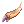 Zenorc's Fang Item ID# 1044
 Mushroom Spore Item ID# 921
Mushroom Spore Item ID# 921
 Panacea Item ID# 525
Panacea Item ID# 525
Mastela Fruit Item ID# 522
Royal Jelly Item ID# 526
 Yggdrasil Berry Item ID# 607
Yggdrasil Berry Item ID# 607
 Yggdrasil Seed Item ID# 608
Yggdrasil Seed Item ID# 608
Note:
This setup is mainly for +20 genetic foods and some other useful items like CWP, Red Herb Activators etc.
General farm, expensive items
Command:
@alootid +731|+728|+749|+12040|+722|+747|+721|+617|+607|+718|+732|+616|+720|+969|+7444|+984|+726|+644|+719|+748
List of items:
2carat Diamond
Topaz
 Frozen Rose
Frozen Rose
Stone of Sage
Pearl
 Crystal Mirror
Crystal Mirror
 Emerald
Emerald
 Old Purple Box
Old Purple Box
Yggdrasil Berry
Garnet
3carat Diamond
Old Card Album
 Aquamarine
Aquamarine
 Gold
Gold
 Treasure Box
Treasure Box
Oridecon
 Sapphire
Sapphire
Gift Box
 Amethyst
Amethyst
 Witherless Rose
Witherless Rose
Consider blacklisting Oridecon (Item ID# 984), which is heavy and drops a lot.
Non-included items for which there was no room left:
 Opal Item ID# 727
Opal Item ID# 727
Ruby Item ID# 723
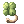 Four Leaf Clover Item ID# 706
Rouge Item ID# 739
Sardonyx Item ID# 725
 Zircon Item ID# 729
Zircon Item ID# 729
 Star Crumb Item ID# 1000
Star Crumb Item ID# 1000
 Old Blue Box Item ID# 603
Old Blue Box Item ID# 603
 Royal Cooking Kit Item ID# 12128
Royal Cooking Kit Item ID# 12128
Yggdrasil Seed Item ID# 608
Royal Jelly Item ID# 526
Mastela Fruit Item ID# 522
Elunium Item ID# 985
Note:
This setup is mainly for casual maps or you can use it in Endless Tower, Endless Cellar etc.
For Endless Tower, Endless Cellar consider using of command @nopickup (it will prevent you from annoying random pick ups through the run).
Rune material farming
Command:
@alootid +12738|+12735|+12736|+12734|+1034|+7030|+7097|+7938|+7221|+1035|+1096|+7123|+7002|+1048|+518|+7069|+7099|+7210|+969|+7939
List of items:
 Rare Rough Runestone
Rare Rough Runestone
 Ancient Rough Runestone
Ancient Rough Runestone
 Mystic Rough Runestone
Mystic Rough Runestone
 Quality Rough Runestone
Quality Rough Runestone
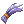 Blue Hair
 Claw of Desert Wolf
Claw of Desert Wolf
Burning Heart
 Light Granule
Light Granule
 Tangled Chains
Tangled Chains
 Dragon Canine
Dragon Canine
 Round Shell
Round Shell
 Dragon Canine
Dragon Canine
 Ogre Tooth
Ogre Tooth
Gold
 Horrendous Hair
Horrendous Hair
Honey
 Destroyed Armor
Destroyed Armor
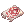 Worn-out Magic Scroll
 Armor Piece of Dullahan
Armor Piece of Dullahan
 Elder Branch
Elder Branch
EDP and converters material farming
Command:
@alootid +904|+946|+947|+1013|+6032|+937|+939|+952|+972|+7033|+993|+992|+991|+990|+997|+996|+995|+994|+6086
List of items:
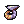 Scorpion Tail
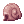 Snail's Shell
 Horn
Horn
 Rainbow Shell
Rainbow Shell
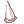 Horn of Hillslion
 Venom Canine
Venom Canine
 Bee Sting
Bee Sting
Cactus Needle
Karvodailnirol
Poison Spore
 Green Live
Green Live
 Wind of Verdure
Wind of Verdure
 Crystal Blue
Crystal Blue
 Red Blood
Red Blood
 Great Nature
Great Nature
 Rough Wind
Rough Wind
 Mystic Frozen
Mystic Frozen
 Flame Heart
Flame Heart
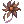 Withered Flower
There is one item slot left in this setup. Feel free to add some item of your choice. I recommend for example Elder Branch, which is useful, not heavy and drops a lot.
TIP:
You can break large elemental stones into smaller ones in Umbala (see Ore Downgrading) or using sorcerer skill  Elemental Analysis
Elemental Analysis
In conclusion
I hope you find some of these setups useful. If i will be in the mood i'll add some more in the future.
In conclusion just promise me one thing guys - be nice to others and don't killsteal! Thank you.
For any suggestions or questions feel free to contact me.
Enjoy, take care, and see you in the game!^^
--
Velda aka JohnnyG aka Alisea aka Lune Soul
Visit my YouTube channel or Twitch channel.